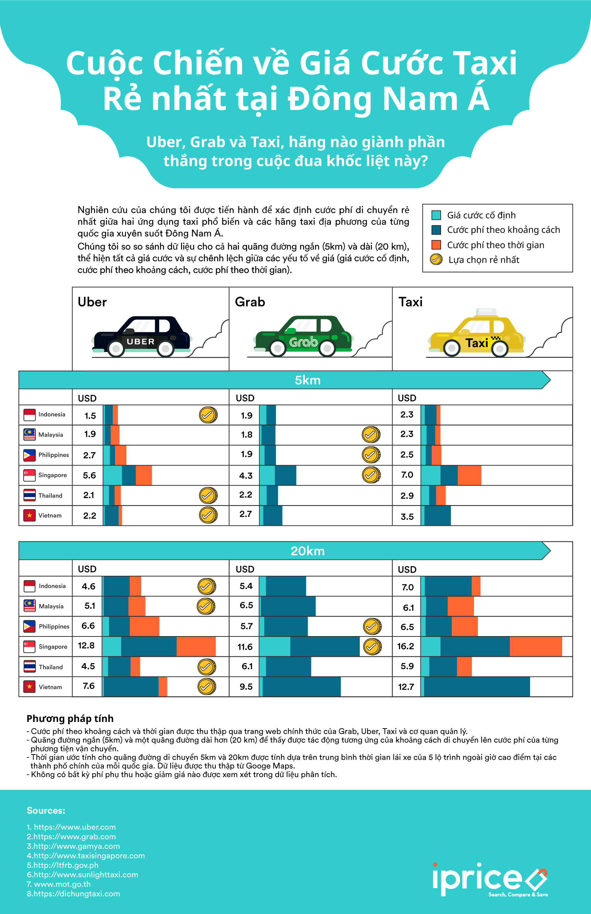

Cuộc Chiến về Giá Cước Taxi
Rẻ nhất tại Đông Nam Á
Uber, Grab và Taxi, hãng nào giành phần
thắng trong cuộc đua khốc liệt này?
Vận tải taxi là một thị trường thực sự sôi động ở Đông Nam Á. Hai gương mặt tên tuổi nhất trên thị trường hiện tại là Grab và Uber đang cạnh tranh khốc liệt với nhau để giành lấy thị phần béo bở, dự tính lên tới 13$ tỉ đô la Mỹ vào năm 2025.
Kể từ khi được thành lập từ cách đây 4 năm, Grab đã có một bước đi vững chắc trên thị trường Đông Nam Á với funding lên tới 750 nghìn đô la Mỹ bởi Softbank vào tháng 9 năm 2016. Grab còn có dự tính sẽ phát triển thêm nữa trong khu vực ở tương lai sắp tới. Mặt khác, bước tiến mới đây của Uber trong việc bán lại Didi vào tháng 8 năm 2016 cho thấy họ đang rất sẵn sàng để mở rộng thị trường Đông Nam Á. Đây là động thái rõ ràng của Uber khi mà trong thời gian qua họ tích cực mở rộng nguồn lực, nhân sự và công nghệ. Sự cạnh tranh khốc liệt giữa hai ông lớn này tạo nên một thị trường có lơi cho khách hàng.
Đính infographic này vào trang của bạn
Click vào hình để nhìn hình rõ hơn.

Đính infographic này vào trang của bạn
Nghiên cứu của chúng tôi được tiến hành để xác định cước phí di chuyển rẻ nhất giữa hai ứng dụng taxi phổ biến và các hãng taxi địa phương của từng quốc gia xuyên suốt Đông Nam Á. Nghiên cứu của chúng tôi dựa trên chênh lệch giữa các yếu tố về giá (giá cước cố định, cước phí theo khoảng cách, cước phí theo thời gian giữa Grab, Uber và taxi truyền thống.
Vào giờ cao điểm tại Việt Nam, mọi người thường mất khoảng 20 phút để di chuyển 5 km trong trung tâm thành phố. Vì thế, người tiêu dùng Việt ưu tiên sử dụng Uber với mức giá 50.000 VND (2.2 USD) thay vì VND với 60.000 VND (2.7 USD) Grab và 80.000 VND (3.5 USD) với taxi.
Với khoảng cách di chuyển xa hơn – khoảng 20 km đổ lại trong vòng 52 phút giao thông, Uber vẫn chiếm ưu thế hơn cả về giá cả với mức giá 170.000 VND (7.6 USD) , tiếp đó là Grab với 220.000 VND (9.5 USD) và 290.000 VND (12.7 USD) với Taxi. Cũng như nhiều quốc gia Đông Nam Á khác, cả Grab lẫn Uber đều đang gặp phải vấn đề hợp thức hoá hình thức kinh doanh của mình.
Có khá nhiều ý kiến trái chiều về 2 hãng vận tải này nhưng cũng như về độ tin cậy của hãng vào thời điểm mới vận hành. Tuy nhiên, sau một thời gian chính thức có mặt tại thị trường, cả Uber và Grab đều có được một số thị phần nhất định và bước đầu xây dựng niềm tin tại thị trường Việt.